QC of single cell libraries
PoYuan Tung
2015-10-23
Last updated: 2016-02-15
Code version: afb6992553e07bb4a9f9437d4f2aebb9b973eb37
Input
library("dplyr")
library("edgeR")
library("ggplot2")
library("cowplot")
theme_set(theme_bw(base_size = 12))
theme_update(panel.grid.minor.x = element_blank(),
panel.grid.minor.y = element_blank(),
panel.grid.major.x = element_blank(),
panel.grid.major.y = element_blank())
source("functions.R")Summary counts from featureCounts. Created with gather-summary-counts.py. These data were collected from the summary files of the full combined samples.
summary_per_sample <- read.table("../data/summary-counts.txt", header = TRUE,
stringsAsFactors = FALSE)
stopifnot(summary_per_sample$well != "bulk",
sum(summary_per_sample$rmdup == "reads") == 864,
sum(summary_per_sample$rmdup == "molecules") == 864)Remove featureCounts classifications with zero counts.
stopifnot(colSums(summary_per_sample[, c(7, 10:15)]) == 0)
summary_per_sample <- summary_per_sample[, c(-7, -10:-15)]
head(summary_per_sample) individual replicate well rmdup Assigned Unassigned_Ambiguity
1 NA19098 r1 A01 molecules 67043 2520
2 NA19098 r1 A01 reads 1953434 71505
3 NA19098 r1 A02 molecules 68222 2598
4 NA19098 r1 A02 reads 2064909 78380
5 NA19098 r1 A03 molecules 45901 1681
6 NA19098 r1 A03 reads 1019557 31762
Unassigned_NoFeatures Unassigned_Unmapped
1 44570 0
2 810666 1116473
3 39183 0
4 643671 1175385
5 27282 0
6 380232 755641Input annotation.
anno <- read.table("../data/annotation.txt", header = TRUE,
stringsAsFactors = FALSE)
stopifnot(anno$well != "bulk", nrow(anno) == 864,
rep(anno$individual, each = 2) == summary_per_sample$individual,
rep(anno$replicate, each = 2) == summary_per_sample$replicate,
rep(anno$well, each = 2) == summary_per_sample$well)
head(anno) individual replicate well batch sample_id
1 NA19098 r1 A01 NA19098.r1 NA19098.r1.A01
2 NA19098 r1 A02 NA19098.r1 NA19098.r1.A02
3 NA19098 r1 A03 NA19098.r1 NA19098.r1.A03
4 NA19098 r1 A04 NA19098.r1 NA19098.r1.A04
5 NA19098 r1 A05 NA19098.r1 NA19098.r1.A05
6 NA19098 r1 A06 NA19098.r1 NA19098.r1.A06Input read counts.
reads <- read.table("../data/reads.txt", header = TRUE,
stringsAsFactors = FALSE)
stopifnot(ncol(reads) == nrow(anno),
colnames(reads) == anno$sample_id)Input molecule counts.
molecules <- read.table("../data/molecules.txt", header = TRUE,
stringsAsFactors = FALSE)
stopifnot(ncol(molecules) == nrow(anno),
colnames(reads) == anno$sample_id)Input single cell observational quality control data.
qc <- read.table("../data/qc-ipsc.txt", header = TRUE,
stringsAsFactors = FALSE)
stopifnot(qc$individual == anno$individual,
qc$replicate == anno$replicate,
qc$well == anno$well)
head(qc) individual replicate well cell_number concentration tra1.60
1 NA19098 r1 A01 1 1.734785 1
2 NA19098 r1 A02 1 1.723038 1
3 NA19098 r1 A03 1 1.512786 1
4 NA19098 r1 A04 1 1.347492 1
5 NA19098 r1 A05 1 2.313047 1
6 NA19098 r1 A06 1 2.056803 1Total ERCC and removal of NA19098.r2
Show the evidence that removing NA19098 batch 2 is the first thing to do.
summary_per_sample_reads <- summary_per_sample[summary_per_sample$rmdup == "reads",]
summary_per_sample_reads$sample_id <- anno$sample_id
summary_per_sample_reads$batch <- anno$batch
stopifnot(colnames(reads) == summary_per_sample_reads$sample_id )
summary_per_sample_reads$ERCC_reads <- apply(reads[grep("ERCC", rownames(reads)), ],2,sum)
summary_per_sample_reads$ERCC_molecules <- apply(molecules[grep("ERCC", rownames(molecules)), ],2,sum)## create a color palette with one color per individual and different shades for repplicates
great_color <- c("#CC3300", "#FF9966", "#FFCC99", "#006633", "#009900", "#99FF99", "#3366FF", "#6699FF", "#66CCFF")
great_color_8 <- c("#CC3300", "#FF9966", "#006633", "#009900", "#99FF99", "#3366FF", "#6699FF", "#66CCFF")
ercc_reads_plot <- ggplot(summary_per_sample_reads,
aes(x = factor(batch), y = ERCC_reads,
fill = factor(batch)), height = 600, width = 2000) +
geom_violin(alpha = .5) +
geom_boxplot(alpha = .01, width = .2, position = position_dodge(width = .9)) +
scale_fill_manual(values = great_color) +
labs(x = "", y = "ERCC reads", title = "Total ERCC read counts per cell") +
theme(axis.text.x = element_text(hjust=1, angle = 45))
ercc_molecule_plot <- ggplot(summary_per_sample_reads,
aes(x = factor(batch), y = ERCC_molecules,
fill = factor(batch)), height = 600, width = 2000) +
geom_violin(alpha = .5) +
geom_boxplot(alpha = .01, width = .2, position = position_dodge(width = .9)) +
scale_fill_manual(values = great_color) +
labs(x = "", y = "ERCC molecules", title = "Total ERCC molecule counts per cell") +
theme(axis.text.x = element_text(hjust=1, angle = 45))
plot_grid(ercc_reads_plot + theme(legend.position=c(.8,.7)),
ercc_molecule_plot + theme(legend.position = "none"),
labels = LETTERS[1:2])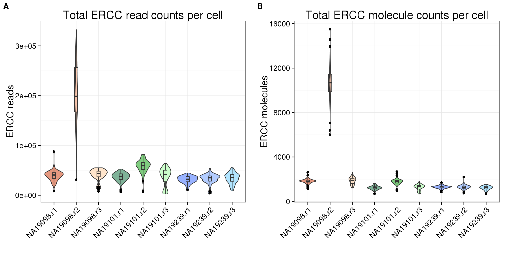
Remove NA19098r2 for all the following analysis
remove_19098r2 <- anno$batch != "NA19098.r2"
anno_rm <- anno[remove_19098r2,]
summary_per_sample_reads_rm <- summary_per_sample_reads[remove_19098r2,]
reads_rm <- reads[, remove_19098r2]
molecules_rm <- molecules[, remove_19098r2]
stopifnot(summary_per_sample_reads_rm$sample_id == colnames(reads_rm))Total mapped reads reads
## add cell number per well by merging qc file
summary_per_sample_reads_qc <- merge(summary_per_sample_reads_rm,qc,by=c("individual","replicate","well"))
## calculate total mapped reads per sample
summary_per_sample_reads_qc$total_mapped <- apply(summary_per_sample_reads_qc[,5:7],1,sum)
## cut off
cut_off_reads <- quantile(summary_per_sample_reads_qc[summary_per_sample_reads_qc$cell_number == 0,"total_mapped"], 0.95)
cut_off_reads 95%
1538579 summary_per_sample_reads_qc$cut_off_reads <- summary_per_sample_reads_qc$total_mapped > cut_off_reads
## numbers of cells
sum(summary_per_sample_reads_qc[summary_per_sample_reads_qc$cell_number == 1, "total_mapped"] > cut_off_reads)[1] 602sum(summary_per_sample_reads_qc[summary_per_sample_reads_qc$cell_number == 1, "total_mapped"] <= cut_off_reads)[1] 97## density plots
plot_reads <- ggplot(summary_per_sample_reads_qc[summary_per_sample_reads_qc$cell_number == 0 |
summary_per_sample_reads_qc$cell_number == 1 , ],
aes(x = total_mapped, fill = as.factor(cell_number))) +
geom_density(alpha = 0.5) +
geom_vline(xintercept = cut_off_reads, colour="grey", linetype = "longdash") +
labs(x = "Total mapped reads", title = "Number of Total mappred reads", fill = "Cell number")Unmapped ratios
## calculate unmapped ratios
summary_per_sample_reads_qc$unmapped_ratios <- summary_per_sample_reads_qc[,8]/apply(summary_per_sample_reads_qc[,5:8],1,sum)
## cut off
cut_off_unmapped <- quantile(summary_per_sample_reads_qc[summary_per_sample_reads_qc$cell_number == 0,"unmapped_ratios"], 0.05)
cut_off_unmapped 5%
0.3715408 summary_per_sample_reads_qc$cut_off_unmapped <- summary_per_sample_reads_qc$unmapped_ratios < cut_off_unmapped
## numbers of cells
sum(summary_per_sample_reads_qc[summary_per_sample_reads_qc$cell_number == 1, "unmapped_ratios"] >= cut_off_unmapped)[1] 102sum(summary_per_sample_reads_qc[summary_per_sample_reads_qc$cell_number == 1, "unmapped_ratios"] < cut_off_unmapped)[1] 597## density plots
plot_unmapped <- ggplot(summary_per_sample_reads_qc[summary_per_sample_reads_qc$cell_number == 0 |
summary_per_sample_reads_qc$cell_number == 1 , ],
aes(x = unmapped_ratios *100, fill = as.factor(cell_number))) +
geom_density(alpha = 0.5) +
geom_vline(xintercept = cut_off_unmapped *100, colour="grey", linetype = "longdash") +
labs(x = "Unmapped reads/ total reads", title = "Unmapped reads percentage")ERCC percentage
## calculate ercc reads percentage
summary_per_sample_reads_qc$ercc_percentage <- apply(reads_rm[grep("ERCC", rownames(reads_rm)), ],2,sum)/apply(summary_per_sample_reads_qc[,5:7],1,sum)
## cut off
cut_off_ercc <- quantile(summary_per_sample_reads_qc[summary_per_sample_reads_qc$cell_number == 0,"ercc_percentage"], 0.05)
cut_off_ercc 5%
0.03245405 summary_per_sample_reads_qc$cut_off_ercc <- summary_per_sample_reads_qc$ercc_percentage < cut_off_ercc
## numbers of cells
sum(summary_per_sample_reads_qc[summary_per_sample_reads_qc$cell_number == 1, "ercc_percentage"] >= cut_off_ercc)[1] 92sum(summary_per_sample_reads_qc[summary_per_sample_reads_qc$cell_number == 1, "ercc_percentage"] < cut_off_ercc)[1] 607## density plots
plot_ercc <- ggplot(summary_per_sample_reads_qc[summary_per_sample_reads_qc$cell_number == 0 |
summary_per_sample_reads_qc$cell_number == 1 , ],
aes(x = ercc_percentage *100, fill = as.factor(cell_number))) +
geom_density(alpha = 0.5) +
geom_vline(xintercept = cut_off_ercc *100, colour="grey", linetype = "longdash") +
labs(x = "ERCC reads / total mapped reads", title = "ERCC reads percentage")Number of genes detected
## endogenous genes
reads_rm_gene <- reads_rm[grep("ENSG", rownames(reads_rm)), ]
## number of genes detected
summary_per_sample_reads_qc$gene_number <- colSums(reads_rm_gene >= 1)
## cut off
cut_off_genes <- quantile(summary_per_sample_reads_qc[summary_per_sample_reads_qc$cell_number == 0,"gene_number"], 0.95)
cut_off_genes 95%
6862.1 summary_per_sample_reads_qc$cut_off_genes <- summary_per_sample_reads_qc$gene_number > cut_off_genes
## numbers of cells
sum(summary_per_sample_reads_qc[summary_per_sample_reads_qc$cell_number == 1, "gene_number"] > cut_off_genes)[1] 625sum(summary_per_sample_reads_qc[summary_per_sample_reads_qc$cell_number == 1, "gene_number"] <= cut_off_genes)[1] 74## density plots
plot_gene <- ggplot(summary_per_sample_reads_qc[summary_per_sample_reads_qc$cell_number == 0 |
summary_per_sample_reads_qc$cell_number == 1 , ],
aes(x = gene_number, fill = as.factor(cell_number))) +
geom_density(alpha = 0.5) +
geom_vline(xintercept = cut_off_genes, colour="grey", linetype = "longdash") +
labs(x = "Gene numbers", title = "Numbers of detected genes")plot_grid(plot_reads + theme(legend.position=c(.7,.7)),
plot_unmapped + theme(legend.position = "none"),
plot_ercc + theme(legend.position = "none"),
plot_gene + theme(legend.position = "none"),
labels = LETTERS[3:6])
Total molecule counts
## calculate total gene molecule counts
summary_per_sample_reads_qc$total_gene_molecule <- colSums(molecules_rm[grep("ENSG", rownames(molecules_rm)),])
## look for outiers
ggplot(summary_per_sample_reads_qc, aes(x = concentration, y = total_gene_molecule / 10^3,
color = as.factor(cell_number))) +
geom_text(aes(label = cell_number)) +
labs(x = "Concentration", y = "Gene molecules (thousands)") +
scale_color_brewer(palette = "Dark2") +
theme(legend.position = "none")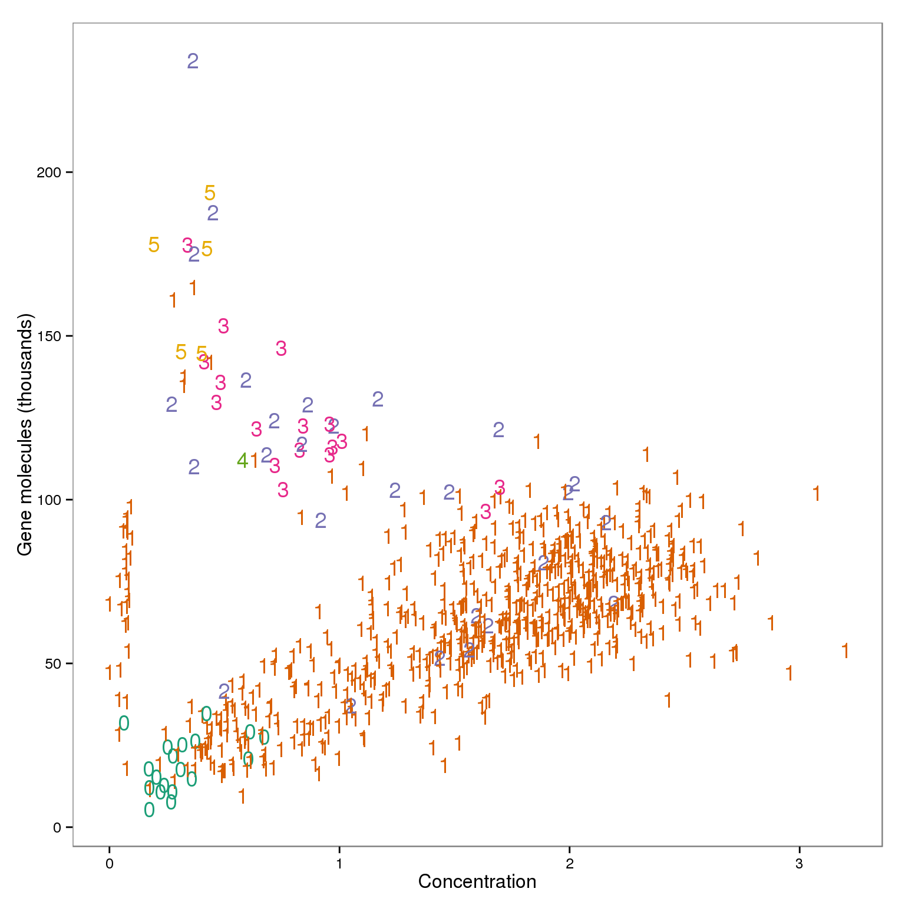
outliers <- summary_per_sample_reads_qc %>% filter(cell_number == 1, concentration < 1.25, concentration > .15,
total_gene_molecule > 100000)
outliers %>% dplyr::select(sample_id) sample_id
1 NA19098.r3.B04
2 NA19098.r3.B11
3 NA19101.r1.B10
4 NA19101.r2.D07
5 NA19101.r3.C07
6 NA19101.r3.D08
7 NA19101.r3.D10
8 NA19101.r3.F05
9 NA19101.r3.F10
10 NA19239.r2.A12
11 NA19239.r2.B07summary_per_sample_reads_qc$molecule_outlier <- summary_per_sample_reads_qc$cell_number == 1 &
summary_per_sample_reads_qc$concentration < 1.25 &
summary_per_sample_reads_qc$concentration > .15 &
summary_per_sample_reads_qc$total_gene_molecule > 100000Linear Discriminat Analysis
library(MASS)
Attaching package: 'MASS'
The following object is masked from 'package:dplyr':
select## create 3 groups according to cell number
group_3 <- rep("two",dim(summary_per_sample_reads_qc)[1])
group_3[grep("0", summary_per_sample_reads_qc$cell_number)] <- "no"
group_3[grep("1", summary_per_sample_reads_qc$cell_number)] <- "one"
## create data frame
data_lda <- data.frame(anno_rm,
cell_number = summary_per_sample_reads_qc$cell_number,
concentration = summary_per_sample_reads_qc$concentration,
total_gene_molecule = summary_per_sample_reads_qc$total_gene_molecule,
group = group_3)
## remove 19098.r1
data_con <- data_lda %>% filter(batch != "NA19098.r1")
plot_before <- ggplot(data_con, aes(x = concentration, y = total_gene_molecule / 10^3,
color = as.factor(group))) +
geom_text(aes(label = cell_number)) +
labs(x = "Concentration", y = "Gene molecules (thousands)", title = "Before") +
scale_color_brewer(palette = "Dark2") +
theme(legend.position = "none")
## perform lda
data_con_lda <- lda(group ~ concentration + total_gene_molecule,
data = data_con)
data_con_lda_p <- predict(data_con_lda,
newdata = data_con[,c("concentration", "total_gene_molecule")])$class
## determine how well the model fix
table(data_con_lda_p, data_con[, "group"])
data_con_lda_p no one two
no 1 0 0
one 16 595 16
two 0 11 33data_con$data_con_lda_p <- data_con_lda_p
plot_after <- ggplot(data_con, aes(x = concentration, y = total_gene_molecule / 10^3,
color = as.factor(data_con_lda_p))) +
geom_text(aes(label = cell_number)) +
labs(x = "Concentration", y = "Gene molecules (thousands)", title = "After") +
scale_color_brewer(palette = "Dark2") +
theme(legend.position = "none")
## identify the outlier
outliers_lda <- data_con %>% filter(cell_number == 1, data_con_lda_p == "two")
outliers_lda$sample_id [1] "NA19098.r3.B04" "NA19098.r3.B11" "NA19101.r1.B10" "NA19101.r2.D07"
[5] "NA19101.r3.C07" "NA19101.r3.D08" "NA19101.r3.D10" "NA19101.r3.F05"
[9] "NA19101.r3.F10" "NA19239.r2.A12" "NA19239.r2.B07"## The lds method identifies outliers
stopifnot(outliers %>% dplyr::select(sample_id) == outliers_lda$sample_id)
plot_grid(plot_before + theme(legend.position=c(.8,.85)),
plot_after + theme(legend.position = "none"),
labels = LETTERS[1:2])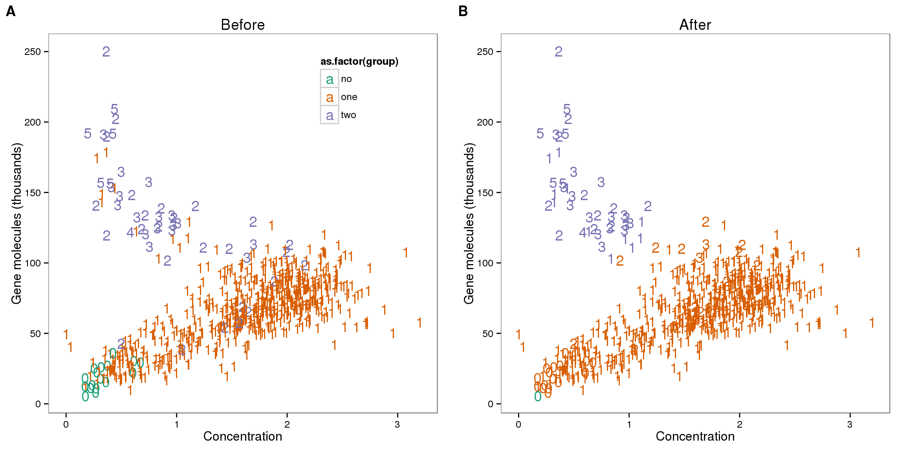
Reads to molecule conversion
## calculate convertion
summary_per_sample_reads_qc$ERCC_conversion <- summary_per_sample_reads_qc$ERCC_molecules / summary_per_sample_reads_qc$ERCC_reads
summary_per_sample_reads_qc$conversion <- summary_per_sample_reads_qc$total_gene_molecule / colSums(reads_rm[grep("ENSG", rownames(reads_rm)),])
ggplot(summary_per_sample_reads_qc, aes(x = ERCC_conversion, y = conversion,
color = as.factor(cell_number))) +
geom_text(aes(label = cell_number)) +
labs(x = "Convertion of ERCC", y = "Conversion of genes") +
scale_color_brewer(palette = "Dark2") +
theme(legend.position = "none")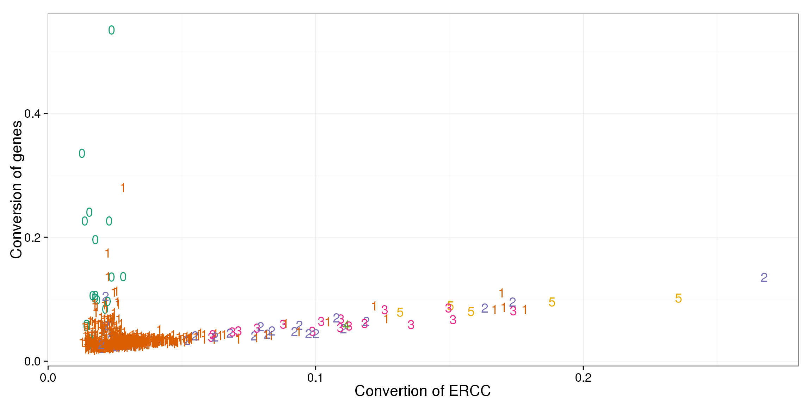
out_ercc_con <- summary_per_sample_reads_qc %>% filter(cell_number == "1", ERCC_conversion > .094)
## try lda
data_lda$conversion <- summary_per_sample_reads_qc$conversion
data_lda$ERCC_conversion <- summary_per_sample_reads_qc$ERCC_conversion
data_ercc_lda <- lda(group ~ ERCC_conversion + conversion,
data = data_lda)
data_ercc_lda_p <- predict(data_ercc_lda,
newdata = data_lda[,c("ERCC_conversion", "conversion")])$class
table(data_con_lda_p, data_con[, "group"])
data_con_lda_p no one two
no 1 0 0
one 16 595 16
two 0 11 33data_lda$data_ercc_lda_p <- data_ercc_lda_p
## identify the outlier
outliers_ercc <- data_lda %>% filter(cell_number == 1, data_ercc_lda_p == "two")
outliers_ercc$sample_id [1] "NA19098.r1.F01" "NA19098.r3.B04" "NA19098.r3.B11" "NA19101.r2.D07"
[5] "NA19101.r3.C07" "NA19101.r3.D08" "NA19101.r3.F05" "NA19101.r3.F10"
[9] "NA19239.r2.A12" "NA19239.r2.B07" "NA19239.r3.G02"## cutoff
out_ercc_con <- summary_per_sample_reads_qc %>% filter(cell_number == "1", ERCC_conversion > .08)
# The two methods no longer give identical results
stopifnot(out_ercc_con %>% dplyr::select(sample_id) == outliers_ercc$sample_id)
summary_per_sample_reads_qc$conversion_outlier <- summary_per_sample_reads_qc$cell_number == 1 &
summary_per_sample_reads_qc$ERCC_conversion > .08
plot_ercc_before <- ggplot(data_lda, aes(x = ERCC_conversion, y = conversion,
color = as.factor(group))) +
geom_text(aes(label = cell_number)) +
labs(x = "Convertion of ERCC", y = "Conversion of genes", title = "Before") +
scale_color_brewer(palette = "Dark2") +
theme(legend.position = "none")
plot_ercc_after <- ggplot(data_lda, aes(x = ERCC_conversion, y = conversion,
color = as.factor(data_ercc_lda_p))) +
geom_text(aes(label = cell_number)) +
labs(x = "Convertion of ERCC", y = "Conversion of genes", title = "After") +
scale_color_brewer(palette = "Dark2") +
theme(legend.position = "none")
plot_grid(plot_ercc_before,
plot_ercc_after,
labels = LETTERS[3:4])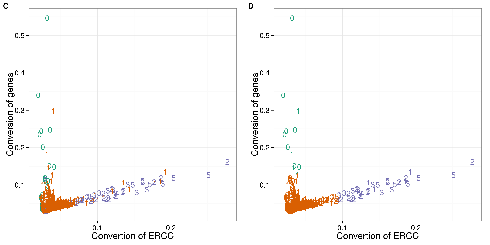
Mitochondrial genes
## create a list of mitochondrial genes (13 protein-coding genes)
## MT-ATP6, MT-CYB, MT-ND1, MT-ND4, MT-ND4L, MT-ND5, MT-ND6, MT-CO2, MT-CO1, MT-ND2, MT-ATP8, MT-CO3, MT-ND3
mtgene <- c("ENSG00000198899", "ENSG00000198727", "ENSG00000198888", "ENSG00000198886", "ENSG00000212907", "ENSG00000198786", "ENSG00000198695", "ENSG00000198712", "ENSG00000198804", "ENSG00000198763","ENSG00000228253", "ENSG00000198938", "ENSG00000198840")
## reads of mt genes in single cells
mt_reads <- reads_rm_gene[mtgene,]
dim(mt_reads)[1] 13 768stopifnot(colnames(reads_rm) == rownames(summary_per_sample_reads_qc$sample_id))
## mt ratio of single cell
summary_per_sample_reads_qc$mt_reads <- apply(mt_reads, 2, sum)
summary_per_sample_reads_qc$mt_reads_ratio <- summary_per_sample_reads_qc$mt_reads /summary_per_sample_reads_qc$total_mapped
## vs. number of genes detected
ggplot(summary_per_sample_reads_qc,
aes(x = gene_number, y = mt_reads_ratio,
color = as.factor(cell_number))) +
geom_text(aes(label = cell_number)) +
labs(x = "Number of genes", y = "Mitochondrial ratio") +
scale_color_brewer(palette = "Dark2") +
theme(legend.position = "none")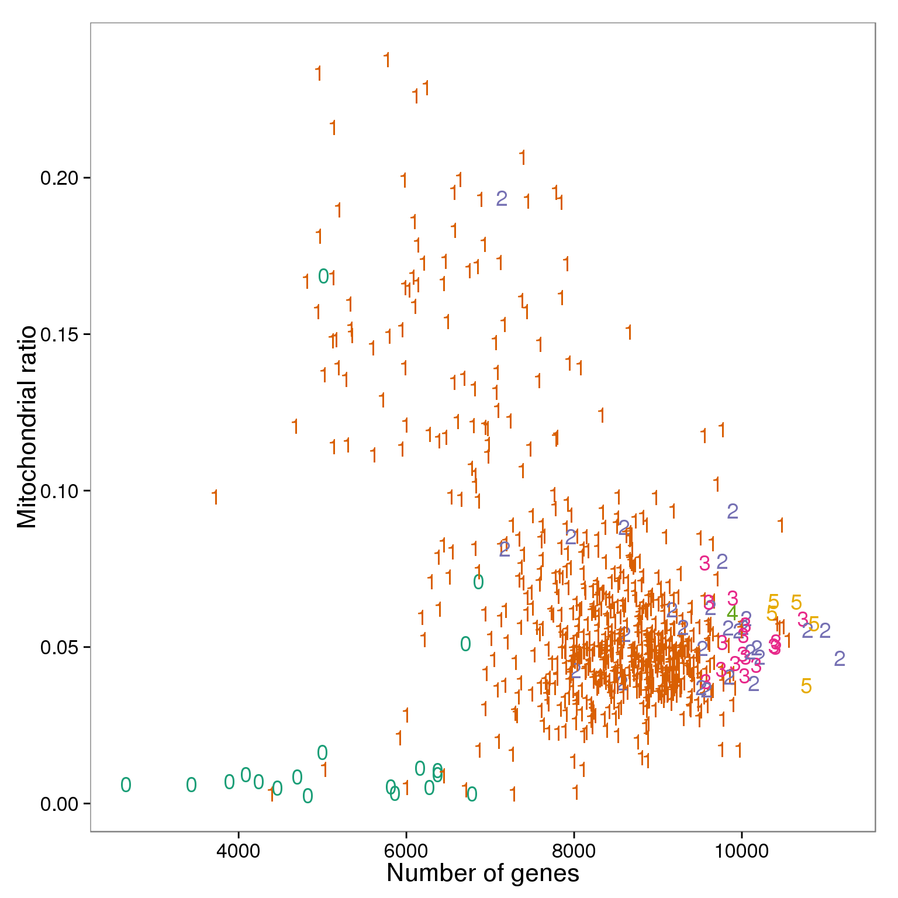
Filter
Final list
## all filter
summary_per_sample_reads_qc$filter_all <- summary_per_sample_reads_qc$cell_number == 1 &
summary_per_sample_reads_qc$cut_off_reads &
summary_per_sample_reads_qc$cut_off_unmapped &
summary_per_sample_reads_qc$cut_off_ercc &
summary_per_sample_reads_qc$cut_off_genes &
summary_per_sample_reads_qc$molecule_outlier == "FALSE" &
summary_per_sample_reads_qc$conversion_outlier == "FALSE"
table(summary_per_sample_reads_qc[summary_per_sample_reads_qc$filter_all,
c("individual", "replicate")]) replicate
individual r1 r2 r3
NA19098 85 0 56
NA19101 80 70 49
NA19239 73 68 79stopifnot(nrow(summary_per_sample_reads_qc) == nrow(anno_rm))
quality_single_cells <- anno_rm %>%
filter(summary_per_sample_reads_qc$filter_all) %>%
dplyr :: select(sample_id)
write.table(quality_single_cells,
file = "../data/quality-single-cells.txt", quote = FALSE,
sep = "\t", row.names = FALSE, col.names = FALSE)Mito ratios
ggplot(summary_per_sample_reads_qc,
aes(x = gene_number, y = mt_reads_ratio,
color = as.factor(filter_all))) +
geom_text(aes(label = cell_number)) +
labs(x = "Number of genes", y = "Mitochondrial ratio") +
theme(legend.position = "none")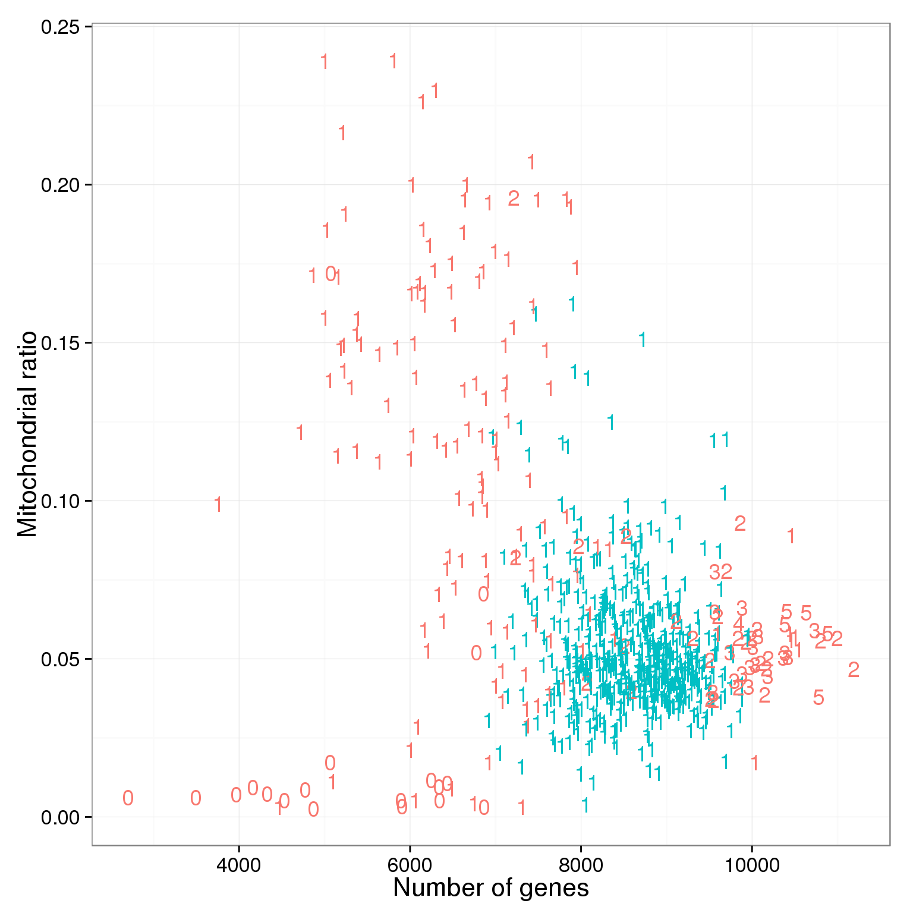
ggplot(summary_per_sample_reads_qc[summary_per_sample_reads_qc$cell_number == 1,],
aes(x = factor(filter_all), y = mt_reads_ratio,
fill = factor(filter_all)), height = 600, width = 2000) +
geom_violin(alpha = .5) +
geom_boxplot(alpha = .01, width = .2, position = position_dodge(width = .9)) +
labs(x = "Quality", y = "Mitochonrial ratio", title = "Mitochondrial ratio of libraries with 1 cell")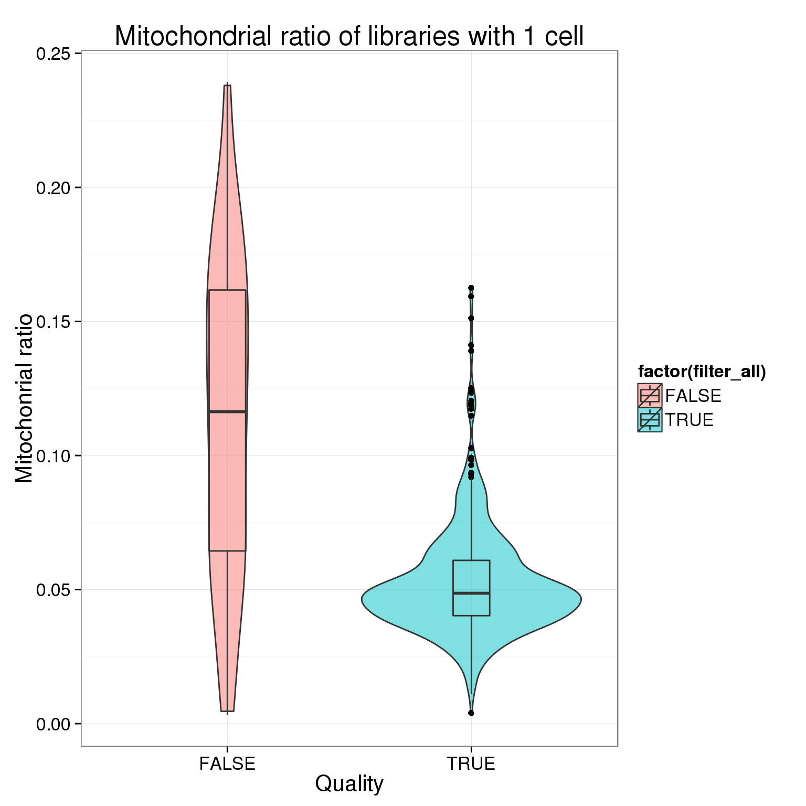
## check the batch of those outliers
mito_outliers <- summary_per_sample_reads_qc %>% filter(filter_all == "TRUE", mt_reads_ratio > .15)
mito_outliers %>% dplyr::select(sample_id, mt_reads_ratio) sample_id mt_reads_ratio
1 NA19098.r1.D07 0.1593539
2 NA19098.r3.G03 0.1625643
3 NA19098.r3.G04 0.1511902## check if 19098 have high mt genes
ggplot(summary_per_sample_reads_qc[summary_per_sample_reads_qc$filter_all == "TRUE",],
aes(x = factor(batch), y = mt_reads_ratio,
fill = factor(batch)), height = 600, width = 2000) +
geom_violin(alpha = .5) +
geom_boxplot(alpha = .01, width = .2, position = position_dodge(width = .9)) +
scale_fill_manual(values = great_color_8) +
labs(x = "batch", y = "Mitochondrial ratio") +
theme(axis.text.x = element_text(hjust=1, angle = 45))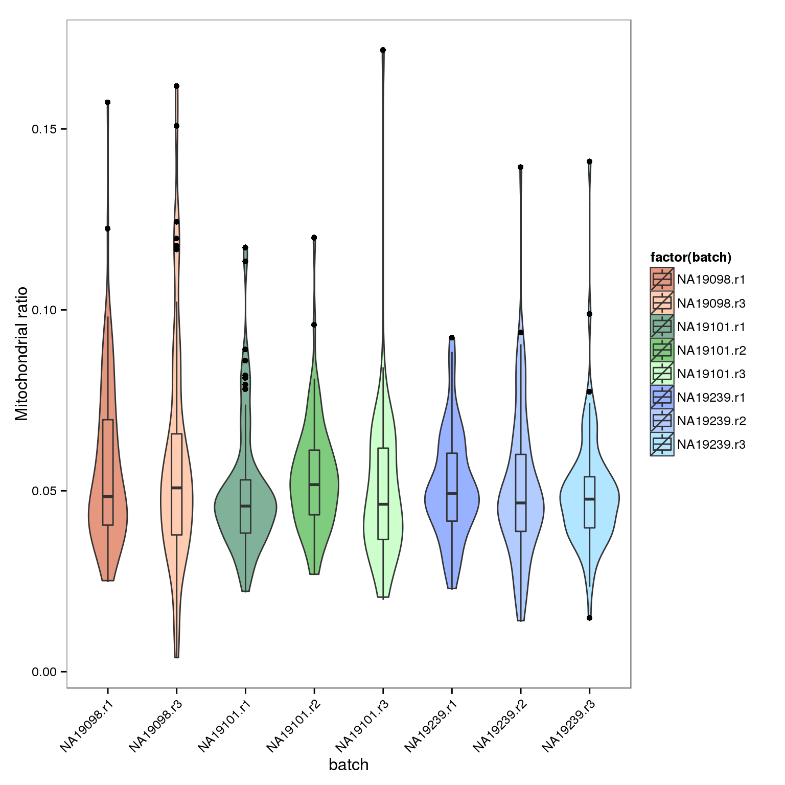
plots
genes_unmapped <- ggplot(summary_per_sample_reads_qc,
aes(x = gene_number, y = unmapped_ratios * 100,
col = as.factor(individual), height = 600, width = 2000)) +
geom_point(size = 3, alpha = 0.3) +
geom_vline(xintercept = cut_off_genes, colour="grey", linetype = "longdash") +
geom_hline(yintercept = cut_off_unmapped * 100, colour="grey", linetype = "longdash") +
labs(x = "Number of genes", y = "Unmapped reads percentage (%)")
genes_ercc <- ggplot(summary_per_sample_reads_qc,
aes(x = gene_number, y = ercc_percentage * 100,
col = as.factor(individual), shape = as.factor(replicate), height = 600, width = 2000)) +
geom_point(size = 3, alpha = 0.3) +
geom_vline(xintercept = cut_off_genes, colour="grey", linetype = "longdash") +
geom_hline(yintercept = cut_off_ercc * 100, colour="grey", linetype = "longdash") +
labs(x = "Number of genes", y = "ERCC reads percentage (%)")
reads_unmapped_num <- ggplot(summary_per_sample_reads_qc,
aes(x = total_mapped, y = unmapped_ratios * 100,
col = as.factor(individual), label = as.character(cell_number), height = 600, width = 2000)) +
geom_text(fontface = 3, alpha = 0.5) +
geom_vline(xintercept = cut_off_reads, colour="grey", linetype = "longdash") +
geom_hline(yintercept = cut_off_unmapped * 100, colour="grey", linetype = "longdash") +
labs(x = "Total mapped reads", y = "Unmapped reads percentage (%)")
reads_ercc_num <- ggplot(summary_per_sample_reads_qc,
aes(x = total_mapped, y = ercc_percentage * 100,
col = as.factor(individual), label = as.character(cell_number), height = 600, width = 2000)) +
geom_text(fontface = 3, alpha = 0.5) +
geom_vline(xintercept = cut_off_reads, colour="grey", linetype = "longdash") +
geom_hline(yintercept = cut_off_ercc * 100, colour="grey", linetype = "longdash") +
labs(x = "Total mapped reads", y = "ERCC reads percentage (%)")
plot_grid(genes_unmapped + theme(legend.position = "none"),
genes_ercc + theme(legend.position = "none"),
reads_unmapped_num + theme(legend.position = "none"),
reads_ercc_num + theme(legend.position = "none"),
labels = LETTERS[1:4])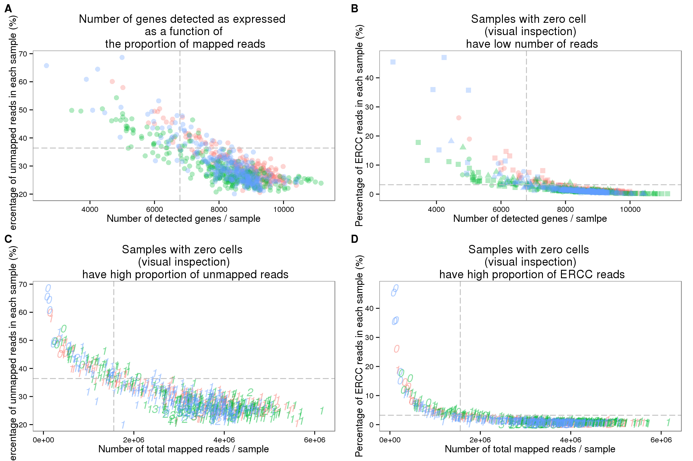
plot_grid(genes_unmapped + theme(legend.position = c(.75,.9)) + labs(col = "Individual"),
reads_unmapped_num + theme(legend.position = "none"),
reads_ercc_num + theme(legend.position = "none"),
labels = LETTERS[3:5],
nrow = 1)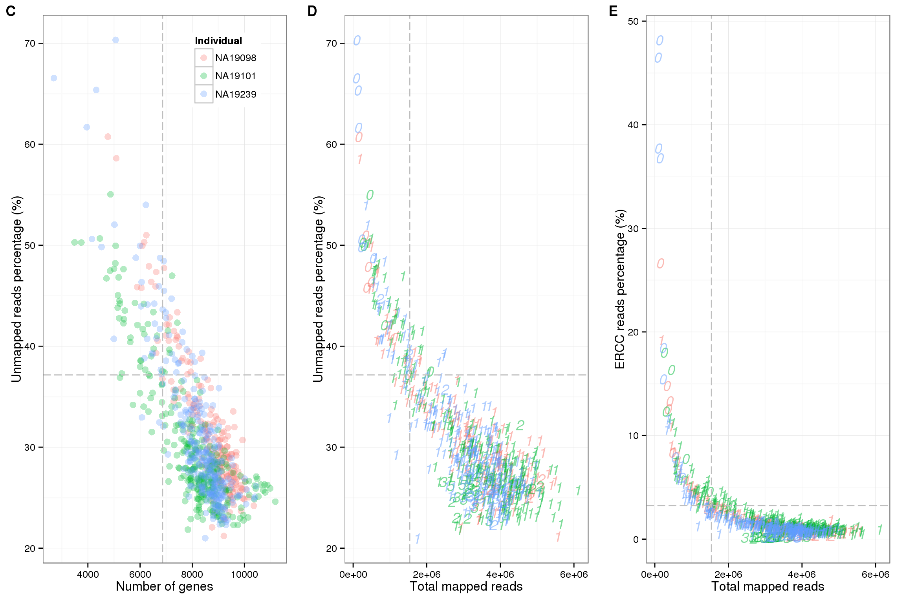
plot_grid(ercc_reads_plot + theme(legend.position = "none"),
ercc_molecule_plot + theme(legend.position = "none"),
plot_reads + theme(legend.position=c(.8,.85)),
plot_unmapped + theme(legend.position = "none"),
plot_ercc + theme(legend.position = "none"),
plot_gene + theme(legend.position = "none"),
labels = LETTERS[1:6],
ncol = 2)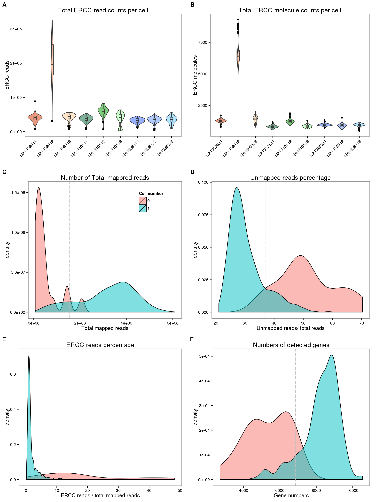
plot_grid(plot_before + theme(legend.position=c(.85,.85)) + labs(col = "Cell number"),
plot_after + theme(legend.position = "none"),
plot_ercc_before,
plot_ercc_after,
labels = LETTERS[1:4])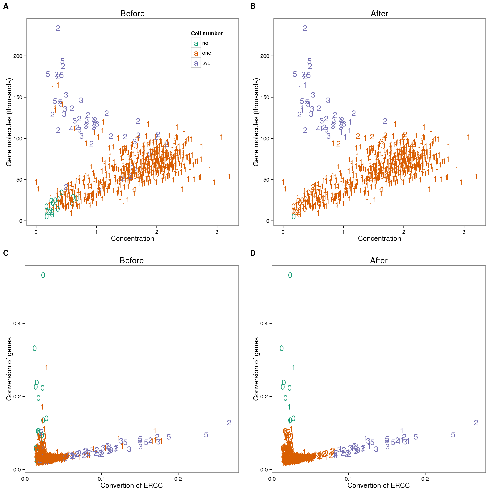
Session information
sessionInfo()R version 3.2.0 (2015-04-16)
Platform: x86_64-unknown-linux-gnu (64-bit)
locale:
[1] LC_CTYPE=en_US.UTF-8 LC_NUMERIC=C
[3] LC_TIME=en_US.UTF-8 LC_COLLATE=en_US.UTF-8
[5] LC_MONETARY=en_US.UTF-8 LC_MESSAGES=en_US.UTF-8
[7] LC_PAPER=en_US.UTF-8 LC_NAME=C
[9] LC_ADDRESS=C LC_TELEPHONE=C
[11] LC_MEASUREMENT=en_US.UTF-8 LC_IDENTIFICATION=C
attached base packages:
[1] stats graphics grDevices utils datasets methods base
other attached packages:
[1] MASS_7.3-40 cowplot_0.3.1 ggplot2_1.0.1 edgeR_3.10.2 limma_3.24.9
[6] dplyr_0.4.2 knitr_1.10.5
loaded via a namespace (and not attached):
[1] Rcpp_0.12.0 magrittr_1.5 munsell_0.4.2
[4] colorspace_1.2-6 R6_2.1.1 stringr_1.0.0
[7] httr_0.6.1 plyr_1.8.3 tools_3.2.0
[10] parallel_3.2.0 grid_3.2.0 gtable_0.1.2
[13] DBI_0.3.1 htmltools_0.2.6 lazyeval_0.1.10
[16] yaml_2.1.13 assertthat_0.1 digest_0.6.8
[19] RColorBrewer_1.1-2 reshape2_1.4.1 formatR_1.2
[22] bitops_1.0-6 RCurl_1.95-4.6 evaluate_0.7
[25] rmarkdown_0.6.1 labeling_0.3 stringi_0.4-1
[28] scales_0.2.4 proto_0.3-10